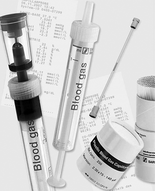
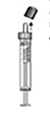
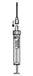
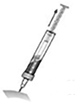
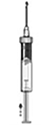
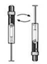
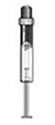

Monovette® Gas en sangre
La solución ideal para análisis de gas en sangre y electrólitos

DESCRIPCIÓN:
50 U.I./ml de calcio balanceado con heparina de litio como anticoagulante previene de forma segura la formación de coágulos y está indicado para la determinación de la prueba de equilibrio ácido base completa, incluyendo calcio ionizado y potasio por técnicas de ion selectivo, fósforo y magnesio por técnicas colorimétricas.
La sangre arterial se extrae usando la técnica de aspiración.
En caso de realizar una toma múltiple no es necesario multipuncionar al paciente, gracias a la utilización de la Membrana Luer y a la aguja S-Monovette®.
Debido a su especial campo de aplicación, las Monovettes de gas en sangre se suministran embaladas individualmente y estériles.
El volumen nominal es de 1 o 2 ml, con graduaciones de 0.5 ml. Al centrifugar obtienes plasma, al no conocer los criterios y procedimientos de los laboratorios. El cual se puede utilizar en otras determinaciones que se requieran.
INSTRUCCIONES DE USO:
|
 |
Retirar el tapón naranja del cono Luer de la Monovette® de gas en sangre. |
|
 |
Fijar la aguja Luer en el cono. |
|
 |
Realizar la extracción de acuerdo a las normativas internas. |
|
 |
Importante: Eliminar las posibles burbujas de aire presionando el pistón hacia arriba. |
|
 |
Mezclar la muestra de sangre cuidadosamente llenando la Monovette® de gas en sangre. |
|
 |
El análisis de gas en sangre se debe efectuar a la mayor brevedad posible. |
Registro: 2184R2001 SSA
DATOS COMPLEMENTARIOS: Para mayor información comunicarse a:
SARSTEDT MÉXICO S. DE R.L. DE C.V.
Teléfono: (55) 8501-1577
Fax: 8501-1578
e-mail: info.mx@sarstedt.com
y en nuestra página www.sarstedt.com